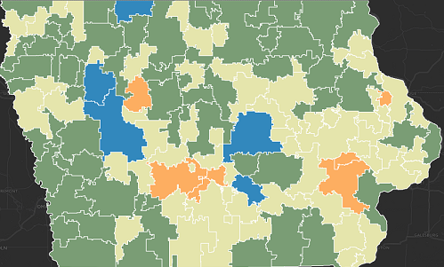

Creating Service Areas from Point Data
November 18, 2015
Service Areas are the geographic catchment representing where people go for a particiular service (hence the name). Generating geogrpahically representative service areas programmatically presents some challenges.
Using a combination of spatial analysis methods geographic service areas were created from dental visit data (nothing identifiabl is included here) ...
